TnT Cars · Oferty · Dlaczego TnT · O nas · Kontakt · DARMOWA WYCENA
Sticky header
OK · bez drabinyCo widzimy
Klikalne: logo TnT Cars → HP, każdy link menu, przycisk DARMOWA WYCENA → formularz wyceny.10 elementów · 10 z werdyktem
Co jest na stronie i w jakiej kolejności widzi to klient. Strona ma 5367 px wysokości.
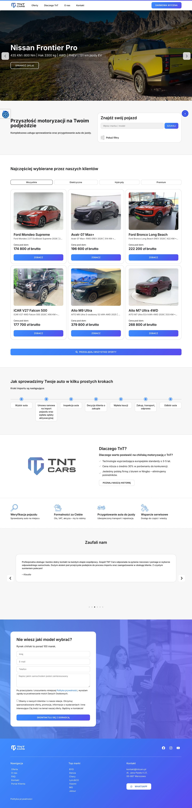
1 2 3 4 5 6 7 8 9 10| # | Etykieta (jak na stronie) | Element | Obserwacje | Etap i funkcja na ścieżce zakupowej | Od góry strony |
|---|---|---|---|---|---|
| 1 | TnT Cars · Oferty · Dlaczego TnT · O nas · Kontakt · DARMOWA WYCENA | Sticky header | Klikalne: logo TnT Cars → HP, każdy link menu, przycisk DARMOWA WYCENA → formularz wyceny. | brak opisu | 0 px |
| 2 | Denza N9 Flagship · Lynk & Co 900 · Nissan Frontier Pro · Jetour T2 PHEV · Denza Z9GT · Vany premium · Zeekr 9X · Xiaomi EV | Hero Carousel | Klikalne: każdy przycisk CTA → oferta/PDP danego pojazdu. Nawigacja karuzeli przez kontrolki Swiper (strzałki boczne, kropki dolne). | brak opisu | 69 px |
| 3 | Przyszłość motoryzacji na Twoim podjeździe | value_proposition_strip | Pasek statyczny z komunikatami marki. Wyświetlony pomiędzy sekcją hero a sekcją produktów. | brak opisu | 669 px |
| 4 | Najczęściej wybierane przez naszych klientów · Wszystkie · Elektryczne · Hybrydy · Premium | Bestsellery | Klikalne: każda karta produktu → PDP pojazdu, zakładki filtracji → zmiana zawartości (js-powered), przycisk PRZEGLĄDAJ → listing wszystkich pojazdów. | brak opisu | 1028 px |
| 5 | Jak sprowadzimy Twoje auto w kilku prostych krokach | process_timeline_section | Sekcja informacyjna bez elementów klikalnych. Przedstawia etapy procesu importu pojazdu. | brak opisu | 2440 px |
| 6 | Dlaczego TnT? | trust_usp_section | Sekcja informacyjna bez elementów klikalnych. Zawiera atuty marki w postaci ikon i tekstów. | brak opisu | 2887 px |
| 7 | Weryfikacja pojazdu | vehicle_verification_section | Sekcja informacyjna edukująca o procesie kontroli i weryfikacji. | brak opisu | 3307 px |
| 8 | Zaufali nam | testimonials_carousel | Klikalne: strzałki nawigacji karuzeli. Wyświetla opinie klientów. | brak opisu | 3510 px |
| 9 | Nie wiesz jaki model wybrać? | vehicle_configurator_section | Sekcja interaktywna z logiką JavaScript. Pełne mapowanie wymaga wykonania JavaScript DOM. | brak opisu | 4115 px |
| 10 | Facebook · Instagram · Youtube · Nawigacja · Top marki · Kontakt · Portal Klienta · Polityka prywatności | footer_multi_column | Klikalne: linki social media, wszystkie linki nawigacji, email/adres klikalne, linki do polityki. | brak opisu | 4906 px |
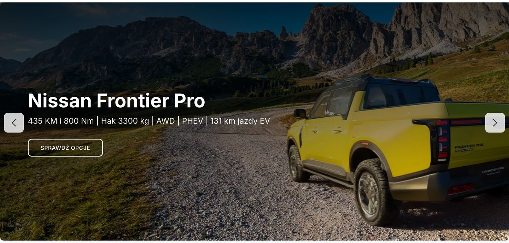
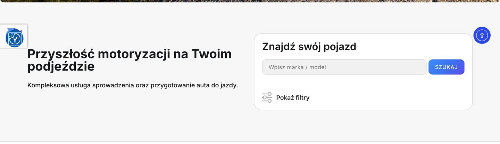
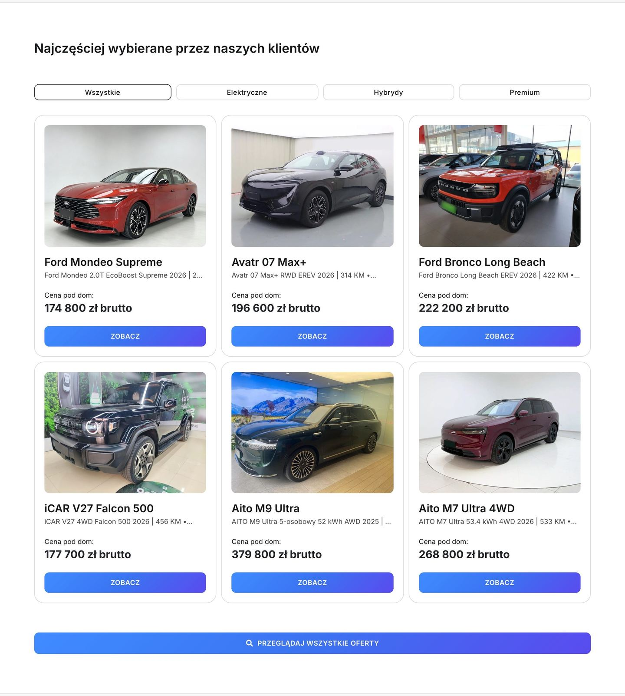
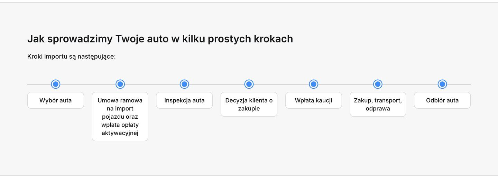
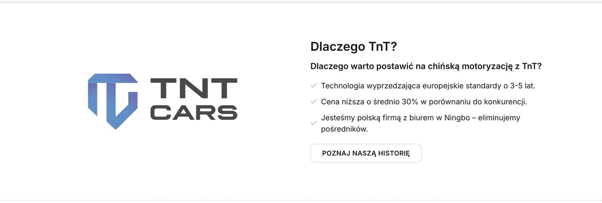
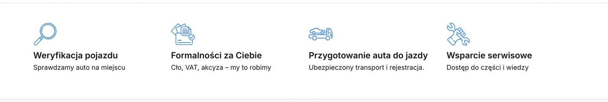
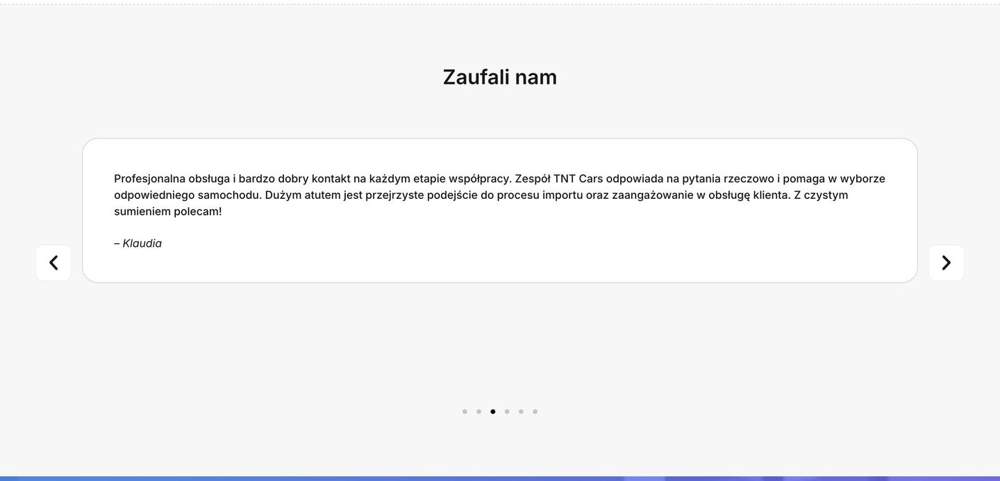
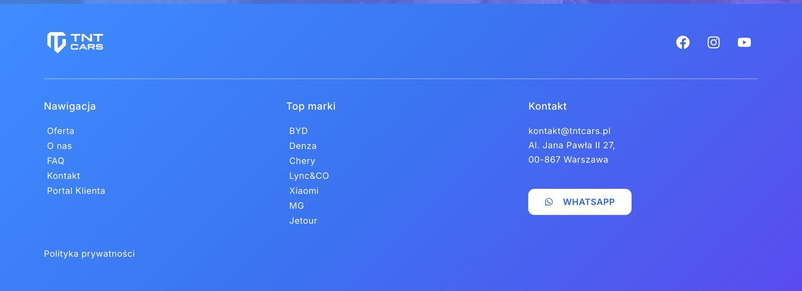
5 elementów · 5 z werdyktem
Co jest na stronie i w jakiej kolejności widzi to klient. Strona ma 5253 px wysokości.
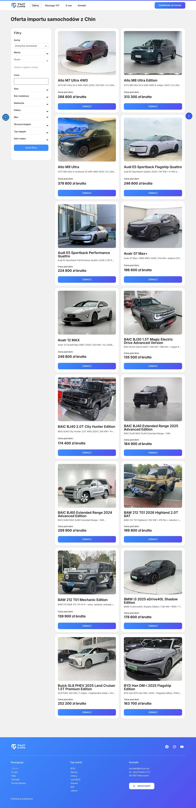
1 2 3 4 5| # | Etykieta (jak na stronie) | Element | Obserwacje | Etap i funkcja na ścieżce zakupowej | Od góry strony |
|---|---|---|---|---|---|
| 1 | TnT Cars · Oferty · Dlaczego TnT · O nas · Kontakt · DARMOWA WYCENA | Sticky header | Sticky header. Opisany w widoku hp. | brak opisu | 0 px |
| 2 | Oferta importu samochodów z Chin | page_title | Sekcja informacyjna określająca kontekst widoku. | brak opisu | 69 px |
| 3 | Filtry | filter_panel_sidebar | Klikalne: każdy checkbox/range filter zmienia zawartość produktów (dinamiczny obraz bez przeładowania). | brak opisu | 141 px |
| 4 | Aito M7 Ultra 4WD · (17 produktów w grid 2x9) | products_grid | Klikalne: każda karta produktu → PDP pojazdu. Filtry boczne modyfikują zawartość dynamicznie. | brak opisu | 181 px |
| 5 | Facebook · Instagram · Youtube · Nawigacja · Top marki · Kontakt · Portal Klienta · Polityka prywatności | footer_multi_column | Stopka. Opisana w widoku hp. | brak opisu | 4793 px |
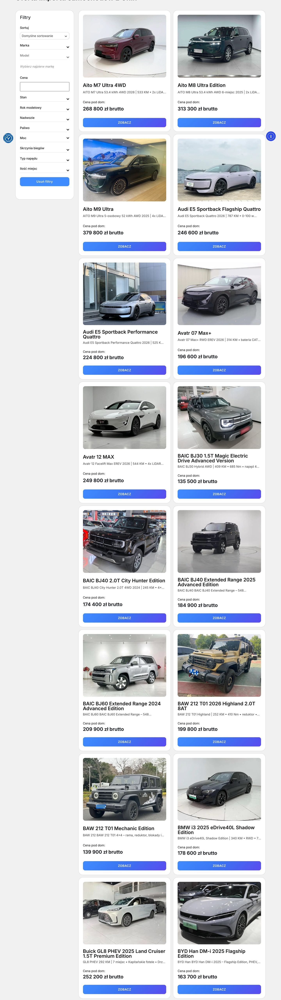
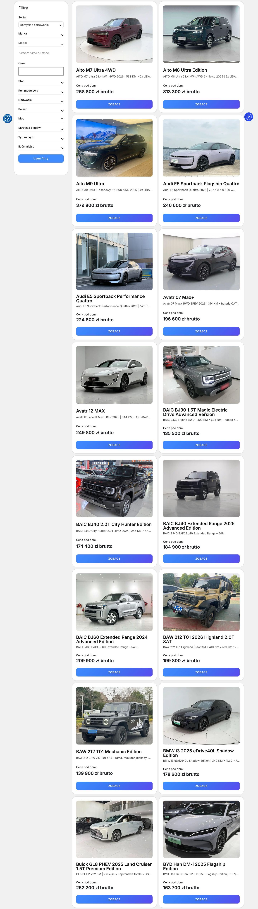
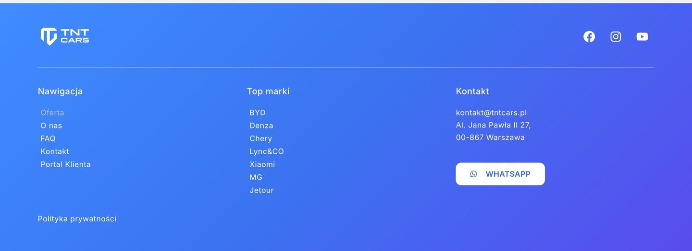
6 elementów · 6 z werdyktem
Co jest na stronie i w jakiej kolejności widzi to klient.
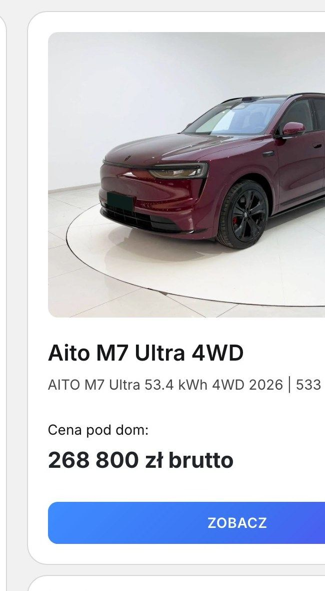
1 2 3 4 5 6| # | Etykieta (jak na stronie) | Element | Obserwacje | Etap i funkcja na ścieżce zakupowej | Od góry strony |
|---|---|---|---|---|---|
| 1 | zdjęcie · Aito M7 Ultra 4WD | Zdjęcie główne | Duże zdjęcie studyjne czerwonego SUV-a (ujęcie 3/4 front) zajmuje 52% kafla — decyduje o kliknięciu. | 0 px | |
| 2 | Aito M7 Ultra 4WD | Nazwa produktu | Duży bold 'Aito M7 Ultra 4WD' — Aito to mało znana marka; kupujący może nie znać jej bez kontekstu. | 330 px | |
| 3 | AITO M7 Ultra 53.4 kWh 4WD 2026 | 533... | card_product_subtitle | Podtytuł ze specyfikacją silnika (53.4 kWh EREV, 533 KM) — przyciąga kupujących szukających elektrycznych SUV-ów. | 360 px | |
| 4 | Cena pod dom: | Etykieta opisu ceny | 'Cena pod dom' sugeruje cenę finalizacji z importem i dostawą — eliminuje niepewność co do ukrytych kosztów. | 400 px | |
| 5 | 268 800 zł brutto | Cena aktualna | '268 800 zł brutto' to jedyna cena na kaflu — jasna, kompletna kwota z VAT; brak raty zwiększa barierę wejścia. | 435 px | |
| 6 | ZOBACZ | card_cta_primary | Niebieski przycisk 'ZOBACZ' (pełna szerokość) to jedyne CTA kafla — wyraźne, kontrastowe, bez alternatywy. | 490 px |
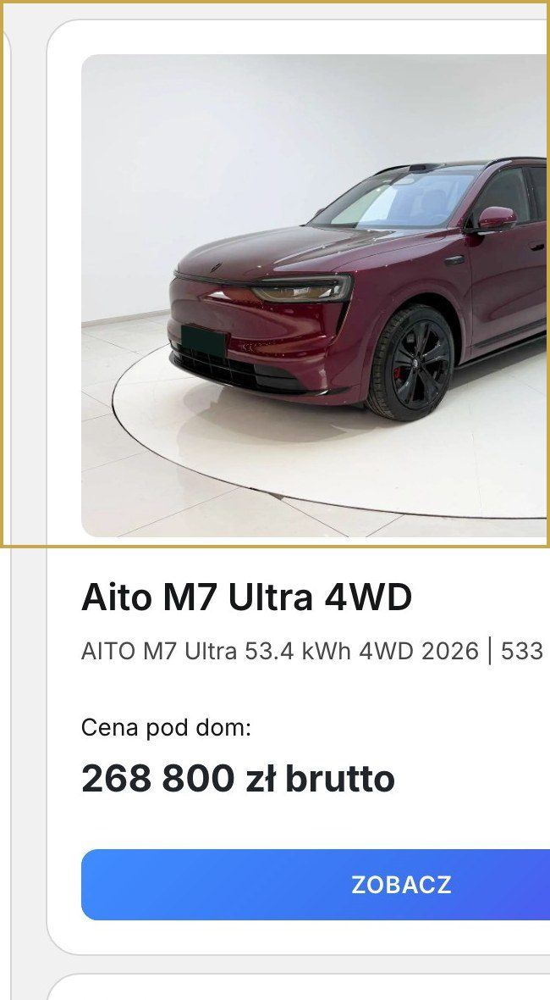
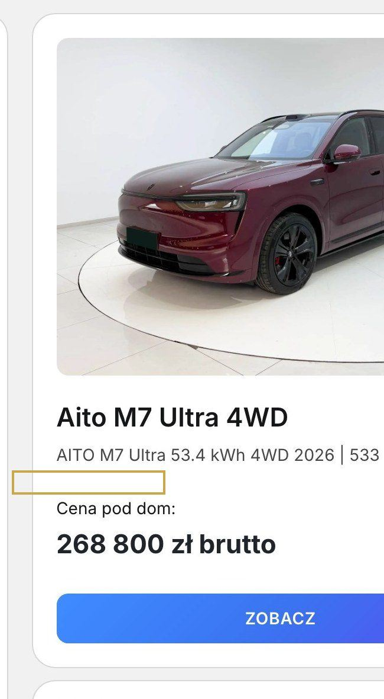
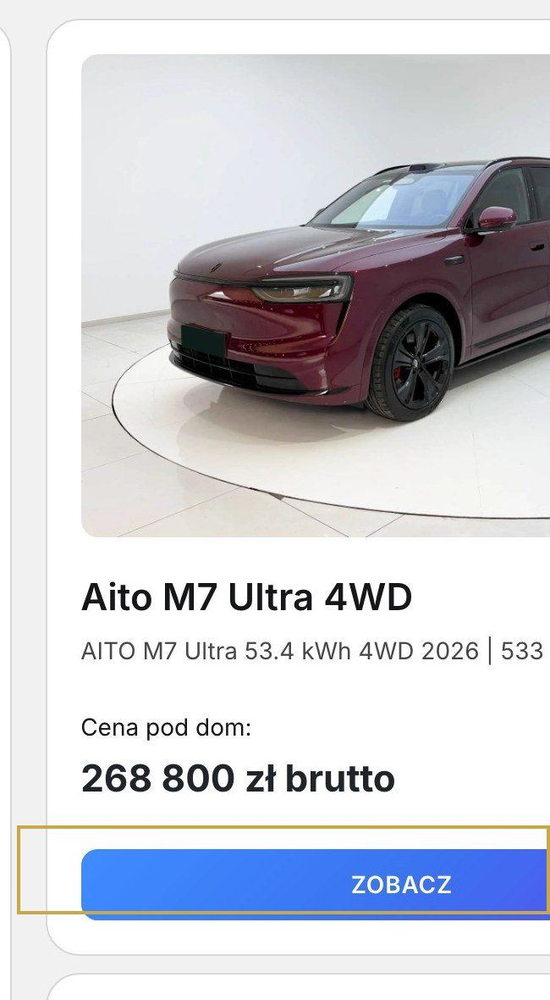
8 elementów · 8 z werdyktem
Co jest na stronie i w jakiej kolejności widzi to klient. Strona ma 5422 px wysokości.
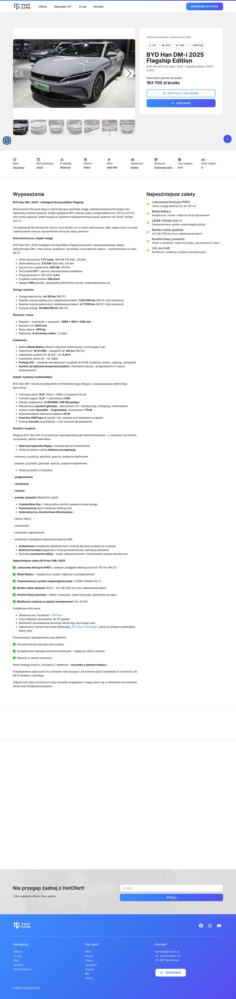
1 2 3 4 5 6 7 8| # | Etykieta (jak na stronie) | Element | Obserwacje | Etap i funkcja na ścieżce zakupowej | Od góry strony |
|---|---|---|---|---|---|
| 1 | TnT Cars · Oferty · Dlaczego TnT · O nas · Kontakt · DARMOWA WYCENA | Sticky header | Sticky header. Opisany w widoku hp. | brak opisu | 0 px |
| 2 | BYD Han DM-i 2025 Flagship Edition | pdp_hero_section | Klikalne: zdjęcia galerii (next/prev/thumbnails), przycisk CTA → form kontaktu, social share. | brak opisu | 69 px |
| 3 | Stan: Używany · Rok produkcji: 2025 · Przebieg: 1600 km · Paliwo: PHEV · Moc: 605 KM · Nadwozie: Sedan · Skrzynia: Automatyczna · Typ napędu: 4x4 · Ilość miejsc: 5 | pdp_attributes_strip | Sekcja informacyjna atrybutów pojazdu. | brak opisu | 815 px |
| 4 | Wyposażenie | equipment_section | Sekcja informacyjna szczegółów wyposażenia. | brak opisu | 961 px |
| 5 | Wymiary | dimensions_section | Sekcja informacyjna szczegółów wymiarów. | brak opisu | 3831 px |
| 6 | Podobne oferty | related_products_section | Klikalne: każda karta → PDP innego pojazdu. | brak opisu | 4018 px |
| 7 | Nie przegap żadnej z HotOfert! | newsletter_cta_section | Klikalne: pole email, przycisk subscribe → zapis do newslettera. | brak opisu | 4720 px |
| 8 | Facebook · Instagram · Youtube · Nawigacja · Top marki · Kontakt · Portal Klienta · Polityka prywatności | footer_multi_column | Stopka. Opisana w widoku hp. | brak opisu | 4962 px |
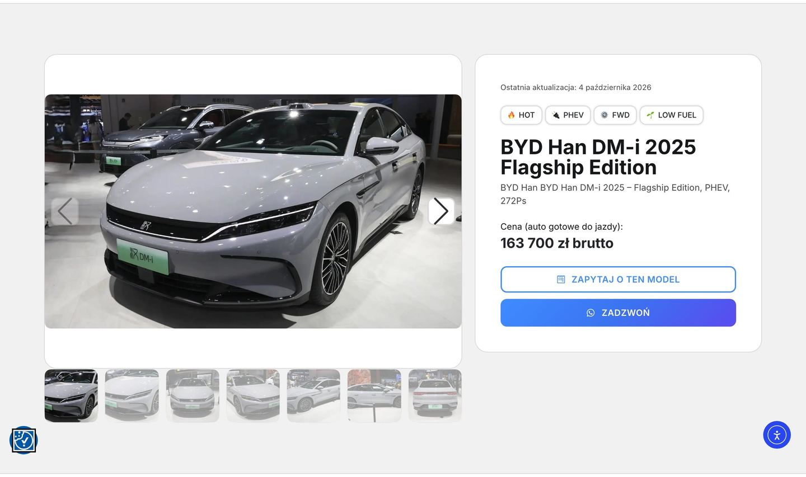
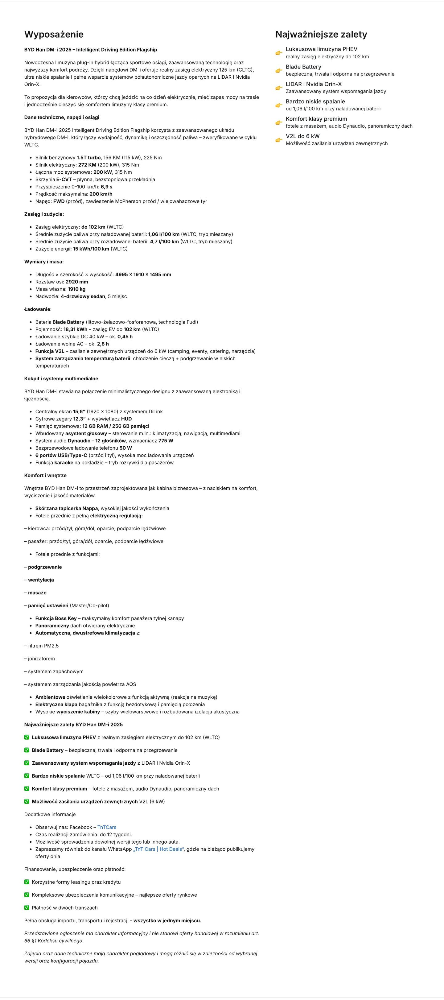
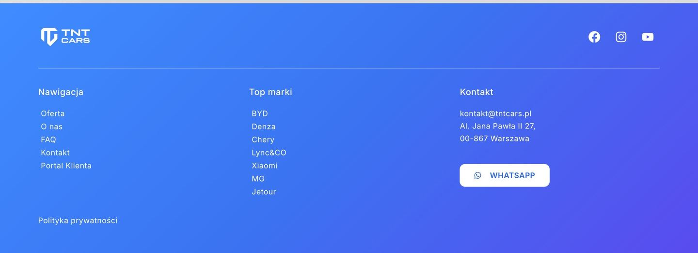